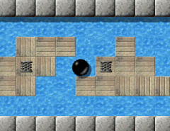

Уровень МесяцаМы хотим каждый месяц больше внимания уделять превосходным уровням. Превосходные уровни это те, у которых средняя оценка пользователей наивысшая и в целом много оценок. Следовательно это Ваш выбор. Поэтому пожалуйста оценивайте уровни, на которых Вы играете и не забывайте присылать Ваши оценки вместе с результатами в конце каждого месяца. Вы можете найти все предыдущие уровни месяца в нашем архиве. Ноябрь 2007: «Big Adventures» от Jon 'WB' Sneyers«Привет, искатель приключений! Тебе предстоит длинный и опасный путь, поэтому будь осторожен!» Jon оставил нам короткое, меткое приветствие в начале его эпического уровня. Он предлагает нам попытаться и решить все маленькие загадки-жемчужины, которые он подготовил для этого сокровища из Enigma 0.92. И в неясном сиянии каждой из этих маленьких блестящих жемчужин вспыхивают воспоминания об уровнях другого типа или видение будущего уровня, по-своему нового и элегантного, кратко выхваченного из великолепия мириад его головоломок, почти так же, как хокку полностью выхватывает момент всего в трех строках ... а сейчас давайте прервемся и прогуляемся по ноябрьскому Уровню Месяца 2007, «Big Adventures»! 
Enigma IV # 100 - Big Adventures
В рейтинге предыдущих УМ изменилось не многое: «Quadropolis» получил еще три оценки и утратил свое преимущество. Теперь «Quadropolis» и «Island Labyrinth» идут на равных, за два месяца до окончательного объявления «Уровня Года»! «Big Adventures» вступил в соревнование на 8-ом месте и обязательно сохранит это заслуженное место среди первой десятки уровней Enigma даже с приходом других УМ. Как всегда, Вы можете узнать больше об оценках на странице архива УМ. «'Big Adventures' - самый простой и приятный уровень»Классический уровень Jon'а возвращает нас к самым истокам Enigma и даже самой великой серии Oxyd. Это второй эпический уровень, уступающий только «Labyrinth of Puzzles» и предлагающий нам перспективу. Уже начальная сцена представляет один из самых используемых в Enigma шаблонов: три деревянных ящика в ряд. Мы знаем эту комбинацию и ее решение наизусть и на моем лице появляется улыбка, когда я читаю на mag-heut повторяющиеся вопросы о том, как справиться с «Jam» из Oxyd Magnum. Когда я впервые столкнулся с «Big Adventures» на моем лице возникла такая же улыбка и я не задумываясь подвинул три ящика - только для того, чтобы понять что на этот раз их должно быть больше: я забыл про воду. И теперь одного ящика не хватает для постройки моста. На протяжении всех этих лет, Jon смог показать мне еще один вариант этого шаблона. И неожиданно этот уровень меня увлек … 
Почему все показывают на меня?
Чтобы написать отзыв о 'Big Adventures' я, для начала, попытался решить его
и даже смог сделать это быстрее, чем в предыдущий раз.
После бесчисленных неудачных попыток, я наконец установил новый личный рекорд: 8:57.
Но по сравнению с мировым рекордом Stupid мой кажется довольно медленным.
По сравнению с другими УМ 'Big Adventures' - самый простой и приятный уровень.
Никто не охотиться за шариком и скорость не имеет значения.
Этот уровень в основном посвящен передвижению ящиков. Он состоит из множества небольших голооволомок,
похожих на Sokoban. В некоторых комнатах было весело расчищать путь к оксидам,
в других это была тяжелая работа. Больше всего мне запомнилась та
космическая головоломка. Но, когда с этим будет покончено, Вы будете щедро вознаграждены. В 'Big Adventures' мне
больше всего нравятся протяженные комнаты.
Хочется отметить, что 'Little Puzzles' Jon'а - упрощенная версия 'Big
Adventures'. Чтобы преуспеть в 'LP', Вы должны несколько раз проверить путь.
Если Вы ошибетесь в 'BA' - пути обратно нет. Бесплодные Усилия Любви(прим. перев. - название сериала, а дальше, возможно, цитата из него): Вы должны каждый раз начинать с начала.
Односторонний лабиринт … как это знакомо. Нет, я не имею в виду знакомо с уровня обучения «Timers», где я использовал односторонние камни для демонстрации использования таймеров. Можно подумать, что в различных уровнях Enigma таких лабиринтов уйма, но я их не нашел. Покопавшись в своей памяти, я наконец вспомнил другие восхитительные серии игр за пределами мира шариков - серии Robot, которые использовали односторонние проходы похожим образом. Еще одно воспоминание детства … Сегодня, мы можем найти слегка отличный односторонний лабиринт в «Pleasure Garden» Jacob'а. И, конечно, в «Little Puzzles», который связан с «Big Adventures» не только отдельными головоломками. Я продолжаю искать оставшиеся варианты и буду рад любому совету. (Дополнение: Еще один есть в Esprit 91; спасибо, Clifford.) «Мне действительно нравится 'Big Adventures'»Должен отметить, это довольно упрощенный вариант переосмысления «Civil Engineer» …. Хотя, конечно, не упрощенный до банальности. Он вызывает воспоминание о всех тех уровнях Enigma, ставших традицией основанной «J.U.M.P.» и «Jump!», которые были включены в Enigma с версии 0.70. Короткий миг - «Balance» - для небольшой передышки. «Balance» был частью Enigma с самого начала в версии 0.39, и долгое время оставался пробным уровнем, пока мы не восстановили его в версии 1.00, чтобы заполнить оставшуюся десятку уровней в первом пакете уровней. Здесь, в «Big Adventures» этот закон равновесия ведет нас к следующей головоломке, великолепной метафоре «Reach the Dock». Затем идет интермедия, Jon предлагает нам последовать за ним …

Полет &hellip
'Big Adventures' довольно интересный уровень, в основном благодаря его оформлению 'разделения
экрана'. С самого начала Вы замечаете для чего это все: открытие уймы дверей.
По ходу дела и сейчас, и потом Вам будет позволено посмотреть на
следующие задания. Это хорошая мотивация, чтобы Вы не сошли с пути, и даже абсолютно
линейные конструкции уровня мне не надоели.
Требования к Вашему интеллекту не слишком большие, а большую часть времени Вы просто будете
передвигать ящики. Но, как единое целое с небольшим перерывом на ловкость, 'Big
Adventures' - хорошая смесь. Тяга к Sokoban'у может благоприятно сказаться на геймплее.
Я полностью это поддерживаю, поэтому мне действительно нравится 'Big Adventures'.
Единственное что мне в этом уровне не нравится это тот факт, что не я поставил мировой рекорд.
Я надеюсь вскоре исправить эту оплошность. ;-)
На это я хочу ответить словами Jenny: «Скорость не имеет значения», особенно когда потеряно всего 6 секунд. :-) Наш путь по этому украшению пакета уровней IV, космическому туннелю и некоторому уплотнению из, пожалуй, беспросветного нагромождения ящиков и бомб, приводит к большому болоту. Помните? Болото и ротор были первыми объектами, преграждавшими путь в Oxyd 1, и до сих пор ими остаются, болотистые местности становятся для нас преградой в «Big Swamp» и даже в «The Aztec Temple». «Big Adventures» был бы без них просто не полным. «Мне хотелось создать более длинные и спокойные уровни головоломок»Предусмотренный лабиринт импульсных камней возможно даже вдохновил illmind'а и Raoul'я написать «Bump Ahead» и «Don't Touch», кроме того нам приходит на ум «Slinky Mayhem». Мы знаем, что мы уже прошли середину пути, видя все только что решенные головоломки, когда прокатились по песку и разрушили камни, преграждавшие нам путь. Это дает нам какое-то неожиданное вдохновение гонки, уровень в далеком будущем Enigma … только, чтобы в конце зигзагообразного маршрута найти способ к виду «The Disappearing Block». Этот вид возвращает нас из будущего Enigma обратно в ее прошлое, далеко назад к началу карьеры Jacob Scott'а, и его второго уровня для Enigma. Увидев односторонний лабиринт в верхнем левом углу следующей комнаты, мы понимаем, что скоро закончим этот уровень. Но перед этим, давайте послушаем Jon Sneyers'а, который представляет нам свое путешествие:
Информацию обо мне Вы можете найти на моем сайте. Вкратце, я 26-тилетний студент компьютерных наук PhD из
Лёвен(Лувен), Бельгия, интересующийся Свободным ПО (уже десять лет использующий GNU/Linux),
приверженец "левой" политики и музыки.
Если я не ошибаюсь, я познакомился с Enigma во время систематического поиска свободных
(таких как GPL) игр для GNU/Linux, пытаясь показать своим друзьям (и себе), что
они действительно существуют ;) и что они тоже могут быть блестяще оформлены.
Это было где-то в 2002 году. В то время я еще учился (компьютерным наукам),
поэтому у меня была уйма времени :). После игры на нескольких уже имевшихся в то время
уровнях, я начал делать несколько уровней для моей подружки, Tina.
Это объясняет форму «Lotsa Triggers» и верхнего правого угла
«Little Puzzles» :). К счастью, в какой-то момент я отправил эти уровни для включения
в следующую версию; иначе они были бы утеряны, потому что несколько месяцев спустя
мой жесткий диск сломался и я подумал, что напрасно считал, что резервные копии остались в прошлом и
в наши дни жесткие диски больше не ломаются :/.

Упс!
В любом случае, после нескольких уровней на ловкость как «Spiral Race» и оба
Skyscrapers, мне хотелось создать более длинные и спокойные уровни головоломок.
Сначала я сделал несколько уровней инь-янь («Bridge Builders», «Block its
way!»), потому что мне на самом деле нравится принцип переключения между шариками
и возможность их сотрудничества. Потом я сделал «Little Puzzles», который все
еще использовал инь-янь, но уже поверхностно (белый шарик изолирован от черного
и ему доступна только половина экрана и одна небольшая головоломка). Этот уровень строился
вокруг первой комнаты: мне хотелось сделать уровень, в котором Вам нужно было бы несколько
раз возвращаться к первому экрану, каждый раз немного приближаясь к тому, чтобы передвинуть
ящик на переключатель. В качестве украшений были добавлены маленькие головолмки с водой.
И для игрока, и для создателя уровней, «Little Puzzles» была подготовкой
к «Big Adventures». Big Adventures - это эпический и линейный уровень, в
котором путешественник должен решить множество головоломок различного типа, чтобы
открыть все двери к последней комнате. Уровень линеен, но загнут в подобие спирали,
поэтому последняя комната видна из начальной и Вы постоянно видите части следующих комнат,
а в последствии, воспоминания о местах, в которых Вы уже побывали.
Уровень не создавался особо сложным или злорадным и хотя иногда он потребует от Вас ловкости
(например прыжков), он позволит Вам использовать сохраненные жизни и пройти через уже решенные
головоломки. Его основная сложность состоит в его размерах: 9 экранов с хотя бы двумя
головоломками или препятствтиями на каждом экране.
Пройдя две последние водные головоломки, мы возвращаемся туда, откуда начали десять минут назад и видим перед собой другую разновидность древнейших видов головоломок - Sokoban. Мы открываем последние двери и проходиим через те самые двери, которые мы открывали на протяжении всех встречавшихся головоломок. Мы добираемся до последней комнаты с оксидами, которая также является портретом, копией уровня-близнеца «Little Puzzles» самого Jon'а. И мы замыкаем не только очевидную спираль этого уровня или взаимосвязанных ссылок, соединяющих двери с головоломками этого уровня, но также и круг связывающий его с «Little Puzzles». После решения «Big Adventures» мы заканчиваем меню уровней для пакета уровней IV и понимаем, что этот уровень полностью завершает пакет даже тематически, потому что спирали в пакете уровней встречаются повсюду, а не только в последней десятке. Благодаря этому, и на границе с пакетом V, этот уровень по-особому связывает прошлое и будущее Enigma … Jon, огромное спасибо за то, что подарил нам это большое приключение! С уважением, |